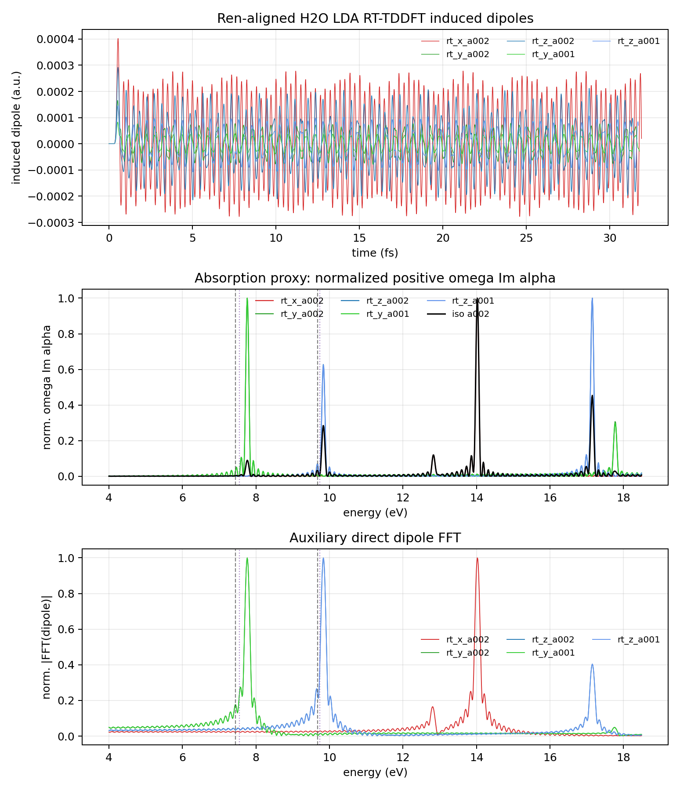

Electronic Structure
H2O Electronic Absorption with ABACUS RT-TDDFT
The previous water-spectroscopy note used path-integral dynamics to reproduce a nuclear vibrational infrared benchmark. This follow-up uses a much smaller system for a different purpose: checking whether an ABACUS real-time TDDFT calculation with an external electric-field kick can reproduce the low-energy electronic absorption peaks of an isolated water molecule. The target is the molecular RT-TDDFT reference of Ren, Kaxiras, and Meng, not a laser-driven structural dynamics experiment.
Why This Benchmark
A laser field in an Ehrenfest RT-TDDFT input can be used in two rather different ways. In the weak-field limit, it is a perturbation for extracting the linear optical response. In a strong-field molecular-dynamics calculation, it can instead deposit energy and drive structural changes. Before interpreting any light-induced bond motion, I wanted a cleaner validation: a fixed-nucleus molecule, known reference peak positions, and a direct comparison of the induced dipole response.
H2O is useful here because the Ren, Kaxiras, and Meng study reported both experimental and real-time TDDFT peak positions for a set of small molecules. For water, the first two reference values are:
These are vertical electronic absorption features. They are not O-H stretching peaks and should not be interpreted as nuclear vibrational frequencies.
Linear-Response Observable
In a weak optical field, the induced dipole is linear in the field history. For a molecule initially in its ground state, this can be written as a causal convolution,
where \(\chi_{ij}(\tau)\) is the retarded dipole-response kernel. The lower limit \(0\) encodes causality: the dipole at time \(t\) can depend on earlier values of the field, but not on future values. If the applied field is monochromatic,
the convolution gives a response at the same frequency,
This equation is the operational definition of the dynamic polarizability. The complex notation does not mean that the physical dipole is complex; the final real part is the observable signal. The real part of \(\alpha\) stores the in-phase, reversible polarization, while the imaginary part stores the out-of-phase response responsible for absorption.
The actual RT-TDDFT calculation used a short zero-frequency Gaussian kick along one Cartesian direction:
A Gaussian kick is not a single frequency. It is a compact broadband pulse, so in frequency space it probes many \(\omega\) values at once. In the linear regime every frequency component still satisfies
For a field applied only along one direction \(j\), the corresponding diagonal component can therefore be estimated as
The field-induced dipole was obtained by subtracting an otherwise identical no-field trajectory:
The no-field subtraction removes the static dipole background, origin-dependent constant offsets, and the small drift of the unperturbed real-time propagation. What remains is the field-induced response used in the Fourier transform.
Why \(\omega\,\mathrm{Im}\,\alpha\) Is Plotted
Absorption is an energy-transfer measurement, not just a measure of how large the dipole oscillation is. The interaction energy between the molecule and a spatially uniform electric field is
For one Cartesian component, the instantaneous power delivered by the field is proportional to
Now take a monochromatic field \(E(t)=E_0\cos\omega t\), and write the polarizability as
With the \(e^{-i\omega t}\) convention above, the real induced dipole is
The \(\alpha'\) term is in phase with the field. It describes reversible polarization: energy is borrowed from the field during part of the cycle and returned later. The \(\alpha''\) term is \(90^\circ\) out of phase with the field. It is the part that gives nonzero net work over a cycle. Differentiating \(\mu(t)\) and averaging \(P(t)=E(t)\dot{\mu}(t)\) over one optical period gives
This derivation explains both factors in the plotted spectrum. The imaginary part of the polarizability is selected because it is the dissipative, absorptive part of the response. The extra factor \(\omega\) appears because absorbed power involves \(\dot{\mu}(t)\), and a time derivative becomes multiplication by frequency in Fourier space.
Up to geometry-independent constants and the usual electromagnetic prefactors, the directional absorption signal is therefore
For an isotropic molecular sample, the orientationally averaged signal uses the trace of the polarizability tensor:
This division by the actual Fourier-transformed field is important. A direct plot of \(|\mathcal F[\Delta\mu(t)]|\) is a useful diagnostic, but it is not the same object as the absorption spectrum. The sign of \(\mathrm{Im}\,\alpha\) can flip if the opposite Fourier-transform convention is used; the physical absorption is the positive dissipative part. The published figure below therefore includes both the absorption proxy and the auxiliary direct dipole FFT.
Aligned Calculation
The final calculation used a deliberately conservative alignment to the molecular RT-TDDFT reference. The important choices were:
The two amplitudes were used as a linear-response check. If the peak positions changed strongly between 0.001 and 0.002 V/Angstrom, the calculation would be entering a field-strength-dependent regime and would not be a clean absorption benchmark.
Result
The final trajectories were stopped after roughly 32 fs because the low-energy peak positions were already stable to about 0.01 eV, and the two field amplitudes gave the same first two electronic peaks. The resulting spectrum is:

The low-energy comparison is:
This is the main result. Once the functional, pseudopotentials, relaxed geometry, field observable, and postprocessing were brought into a consistent RT-TDDFT setup, the excessive blue shift seen in a rougher preliminary calculation disappeared. The remaining deviation is on the scale expected for a local/semi-local RT-TDDFT molecular absorption benchmark.
Finite-Time Ringing
The small oscillations along the spectral baseline are not interpreted as physical absorption peaks. They are mostly finite-window Fourier artifacts. A roughly 32 fs signal has an energy resolution scale
and a hard or short time window produces side lobes in frequency space. The analysis script applies a mild exponential damping window before the FFT, but the result is still a finite-time spectrum. A longer propagation, or a deliberately chosen Lorentzian/Hann/Blackman broadening protocol, would reduce the baseline wiggles and produce a cleaner line shape. Zero padding can make the plotted curve look smoother, but it does not add physical resolution.
For this benchmark I therefore used peak stability under time-window extension and field-amplitude reduction as the convergence criterion, rather than the complete disappearance of low-amplitude baseline ripples.
Why No Nuclear Quantum Effects Here
This benchmark does not claim that nuclear quantum effects are generally unimportant under photoexcitation. It asks a narrower question: can the electronic RT-TDDFT external-field machinery reproduce fixed-geometry vertical absorption peaks for a small molecule?
In that question, fixed nuclei are the clean choice. The weak Gaussian kick probes the electronic linear response near the ground-state geometry; the electronic density responds on an attosecond-to-femtosecond timescale, while the nuclei are effectively frozen during the vertical excitation. Nuclear quantum effects can matter for vibronic structure, zero-point geometry sampling, isotope shifts, and temperature-dependent broadening. They become central again when the observable is a bond length, a reaction coordinate, or a light-induced structural event. They are simply not the target variable in this electronic absorption validation.
This is why the present note complements, rather than replaces, the previous TRPMD infrared spectrum note. The TRPMD calculation tested quantum nuclear dynamics in a vibrational spectrum. The present calculation tests an electronic response implementation before using it in more complicated electron-nuclear dynamics.
Limitations
- The high-energy region is not fully quantitative in this compact NAO setup. The 14 and 17 eV features are stronger than expected from the low-energy benchmark, most likely because diffuse and Rydberg-like states are more sensitive to basis and box choices.
- The plot is normalized. It is suitable for comparing peak positions and qualitative response channels, not absolute oscillator strengths.
- The calculation is a weak-field absorption benchmark. It does not prove that a strong laser pulse will drive a particular bond-shortening or bond-breaking event in a molecular dynamics simulation.
- The nuclear positions are fixed. Any claim about vibronic broadening, isotope dependence, or photoinduced structural dynamics would need nuclear sampling or coupled electron-nuclear propagation.
Reproducibility Notes
The published code attachments are intentionally small. They preserve the analysis protocol and final peak table without publishing machine-specific paths or large raw trajectory files.
analyze_h2o_rt_tddft.py- reads ABACUSdipole_s1.txtandefield_0.txtoutputs, subtracts the no-field dipole, computes \(\alpha(\omega)\), and plots the absorption proxy.h2o_rt_tddft_peaks.csv- compact peak table for the final benchmark and reference values.abacus_h2o_rt_tddft_input.template- representative ABACUS RT-TDDFT input showing the weak Gaussian field settings.
A representative analysis command is:
python assets/code/rt-tddft-h2o/analyze_h2o_rt_tddft.py \
path/to/h2o-rt-tddft-output \
--output analysis/h2o_rt_tddft_absorption \
--dt-fs 0.005 \
--damping-fs 25.0Takeaways
- A weak, directional electric-field kick in RT-TDDFT is a clean way to extract molecular electronic absorption when it is interpreted through the induced dipole and polarizability.
- For H2O, the aligned ABACUS calculation gives low-energy peaks at 7.762 and 9.832 eV, close to the Ren/Kaxiras/Meng RT-TDDFT reference values of 7.553 and 9.740 eV.
- Low-amplitude baseline wiggles in the FFT spectrum are finite-time ringing, not physical peaks.
- Fixed nuclei are appropriate for this validation because the target is vertical electronic absorption, not nuclear vibrational dynamics or laser-induced bond motion.
References
- J. Ren, E. Kaxiras, and S. Meng, "Optical properties of clusters and molecules from real-time time-dependent density functional theory using a self-consistent field," Molecular Physics 108, 1829-1844 (2010). DOI: 10.1080/00268976.2010.491489.
- ABACUS documentation, "Full List of INPUT Keywords," RT-TDDFT external-field keywords including
td_vext_dire,td_gauss_sigma,td_gauss_t0,out_dipole, andout_efield. Documentation page. - M. Rossi, M. Ceriotti, and D. E. Manolopoulos, "How to remove the spurious resonances from ring polymer molecular dynamics," J. Chem. Phys. 140, 234116 (2014). DOI: 10.1063/1.4883861.